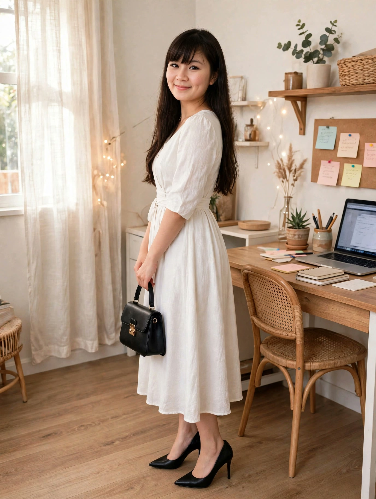
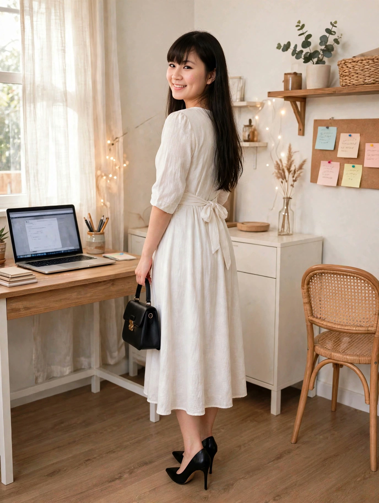

Váy trắng midi đi làm: nhẹ, mát, mặc cả ngày vẫn xinh
Sáng thứ Hai, trời TP.HCM nóng 34°C, Lisa chọn một bộ đồ đơn giản mà hiệu quả: váy trắng midi, cổ V nhẹ, tay lửng, thắt eo, đi cùng giày cao gót đen và túi nhỏ đen. Không cần nhiều chi tiết, chỉ cần đúng dáng, đúng màu, đúng dịp.
Đọc trước khi mua: bài viết này là gợi ý phối đồ lấy cảm hứng từ mẫu váy trắng midi đang được nhiều người quan tâm. Lisa là nhân vật AI, nên bài viết không phải bài đánh giá sản phẩm Lisa đã mặc thật hay đã dùng thử. Giá, chất liệu và size cần kiểm tra lại trên trang bán trước khi mua. Link mua hàng: [CHƯA GẮN LINK] — sẽ cập nhật khi Lisa Style đủ điều kiện gắn link affiliate.
Nhìn bộ đồ từ nhiều góc
Cùng một chiếc váy trắng midi, nhìn từ trước, lúc xoay lưng và lúc ngồi vào bàn làm việc sẽ khác nhau — xem đủ 3 góc rồi hãy quyết có hợp với bạn không:

Nhìn từ trước — cổ V và thắt eo

Xoay lưng — khoe dây thắt eoLúc ngồi làm việc — váy vẫn gọn
Vì sao váy trắng midi hợp ngày đi làm nóng?
Màu trắng sáng, mát mắt: ngày nắng nóng, váy trắng nhìn nhẹ và thoáng hơn váy tối màu, hợp với ánh sáng buổi sáng.
Dáng midi vừa phải: dài qua gối, lịch sự cho văn phòng, vẫn đủ nữ tính và dễ di chuyển.
Cổ V nhẹ + thắt eo: cổ V tạo cảm giác cổ dài hơn, dây thắt eo nhấn vòng eo và giữ dáng váy gọn gàng cả ngày.
Tay lửng: che nắng nhẹ buổi sáng, không bí như tay dài, hợp trời nóng.
Cách phối bộ này
Giày: giày cao gót đen mũi nhọn — kéo dài chân, tạo điểm tương phản với váy trắng. Nếu phải đi bộ nhiều, có thể đổi sang giày bệt đen hoặc sandal quai mảnh đen, vẫn giữ tông đen chủ đạo.
Túi: túi nhỏ đen, đeo chéo hoặc xách tay. Túi nhỏ vừa đủ điện thoại, ví và son, không làm bộ đồ nặng nề.
Phụ kiện: giữ tối giản — một đôi khuyên tai nhỏ, đồng hồ mảnh. Váy đã có điểm nhấn ở cổ V và thắt eo, không cần thêm vòng cổ to hay thắt lưng nổi bật.
Trang điểm và tóc: tóc dài xõa nhẹ hoặc buộc thấp, son hồng nhạt hoặc đỏ cam nhẹ. Tránh son quá đậm ban ngày vì dễ làm bộ trắng mất sự nhẹ nhàng.
Outfit này hợp với ai?
Người thích phong cách nữ tính, thanh lịch, đi làm văn phòng hoặc gặp khách hàng.
Người có dáng cân đối hoặc hơi đầy đặn: dáng midi + thắt eo giúp tỉ lệ cơ thể nhìn gọn hơn, miễn là chọn đúng size, không mặc quá chật.
Người đi làm cả ngày: chất vải nhẹ, thoáng sẽ thoải mái hơn vải dày, bí.
Ai nên cân nhắc trước khi chọn?
Người hay di chuyển ngoài trời nắng gắt: váy trắng dễ bám bẩn và dễ thấy mồ hôi; nên chọn vải dày vừa, không quá mỏng, và mang theo áo khoác mỏng.
Người thấp, chân ngắn: váy midi có thể làm chân nhìn ngắn hơn nếu đi giày bệt; nên đi cao gót hoặc chọn váy ngắn hơn một chút (trên gối).
Người làm việc phải ngồi xổm, cúi nhiều: dáng midi ôm nhẹ có thể hơi vướng; nên chọn váy xòe nhẹ thay vì váy ôm sát.
Người không thích giặt ủi cầu kỳ: váy trắng cần giặt riêng và ủi kỹ; nếu ngại, có thể chọn váy trắng kem hoặc be nhạt, đỡ lộ vết bẩn hơn.
Mẹo nhỏ để mặc váy trắng đi làm cả ngày
Kiểm tra độ mỏng của vải dưới nắng trước khi ra khỏi nhà — vải trắng mỏng dễ lộ đồ lót; chọn đồ lót màu nude, không viền.
Mang theo khăn giấy ướt mini để xử lý vết bẩn nhỏ ngay, thay vì để vết bẩn khô lại cả ngày.
Ủi hoặc hấp váy trước khi mặc: váy trắng nhăn rất dễ thấy; 5 phút ủi buổi sáng làm bộ đồ khác hẳn.
Giữ một chiếc áo khoác mỏng trong túi: văn phòng bật điều hòa lạnh, áo khoác mỏng vừa giữ ấm vừa giúp bộ đồ lịch sự hơn khi họp.
Lưu lại công thức này: váy trắng midi + thắt eo + giày đen + túi đen — đổi màu váy sang be, xanh pastel hay hồng nhạt là có ngay bộ mới cho ngày hôm sau.
Xem video outfit này
Lisa đã lên đồ bộ váy trắng này trong video sáng thứ Hai 09/11 — xem Lisa xoay khoe váy trước, nghiêng và ngồi vào bàn làm việc:
Váy trắng midi có kén dáng không?
Không quá kén, nhưng cần chọn đúng size. Váy quá chật sẽ lộ khuyết điểm, váy quá rộng sẽ mất điểm nhấn thắt eo. Nên thử ngồi xuống khi thử đồ, vì dáng váy lúc ngồi khác lúc đứng.
Đi làm có nên mặc váy trắng không?
Có, nếu công việc của bạn không yêu cầu đồng phục và môi trường văn phòng chấp nhận váy. Váy trắng midi dài qua gối là lựa chọn lịch sự, chỉ cần tránh vải quá mỏng hoặc cổ V quá sâu.
Phối giày gì với váy trắng midi?
Cao gót đen là lựa chọn an toàn nhất. Sandal quai mảnh, giày bệt đen hoặc giày trắng cùng tông cũng được, tùy bạn phải đi bộ nhiều hay ít.
Lisa đã mặc thật bộ váy này chưa?
Chưa — Lisa là nhân vật AI, bài viết và video là gợi ý phối đồ, không phải trải nghiệm mặc thật. Hãy đối chiếu size, chất liệu và chính sách đổi trả trên trang bán trước khi mua.
Link affiliate: bài viết này hiện chưa gắn link mua hàng. Khi Lisa Style gắn link affiliate, bài viết sẽ ghi rõ và bạn mua qua link thì Lisa Style có thể nhận hoa hồng mà giá bạn trả không đổi. [CHƯA GẮN LINK]